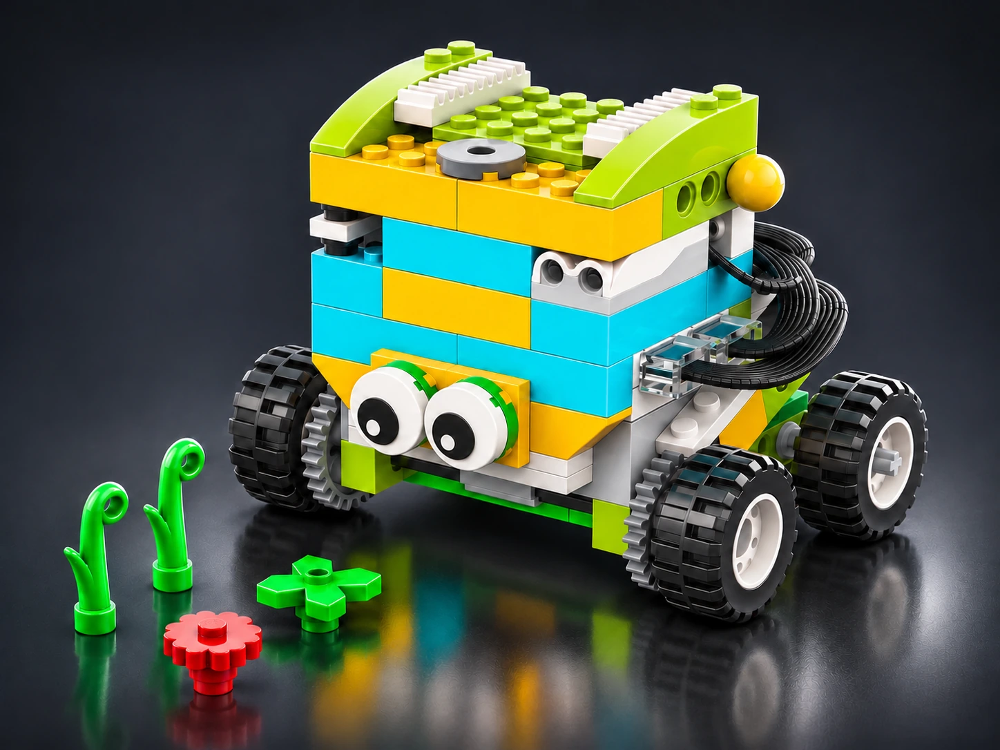
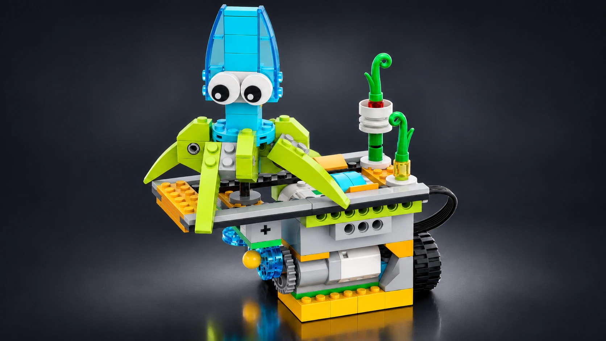
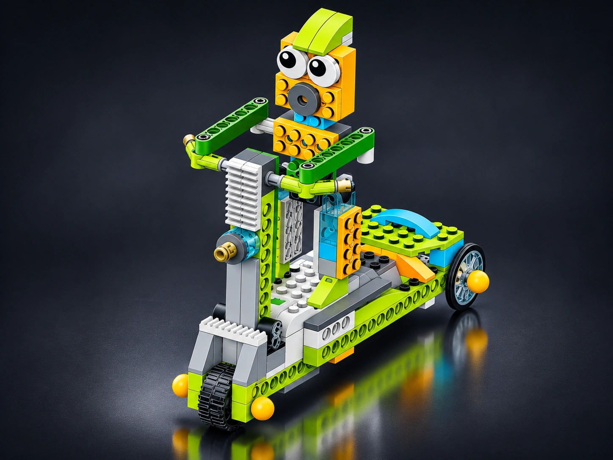

Έξυπνος Κάδος
Κατασκευάζουμε έναν τροχοφόρο έξυπνο κάδο και εξερευνούμε την κίνηση, τις συνθήκες αισθητήρα και τον ήχο.
Δες την κατασκευήΤα παιδιά κατασκευάζουν τα μοντέλα τους, τα προγραμματίζουν και δοκιμάζουν ξανά ώσπου να λειτουργήσουν όπως τα φαντάστηκαν.

Κατασκευάζουμε έναν τροχοφόρο έξυπνο κάδο και εξερευνούμε την κίνηση, τις συνθήκες αισθητήρα και τον ήχο.
Δες την κατασκευή
Κατασκευάζουμε έναν δεινόσαυρο με κινητήρα και ανακαλύπτουμε πώς αντιδρά στην προσέγγιση με αισθητήρα και επαναλήψεις.
Δες την κατασκευή
Ζωντανεύουμε ένα θαλάσσιο πλάσμα με κινητήρα, επανάληψη, τυχαίο φωτισμό και ήχο.
Δες την κατασκευή
Δοκιμάζουμε ένα παιχνίδι στόχου με frisbee, κινητήρα, αισθητήρα και ψηφιακή καταμέτρηση.
Δες την κατασκευή
Κατασκευάζουμε ένα παιχνίδι μπάσκετ και συνδυάζουμε μηχανική κίνηση, αισθητήρα και καταμέτρηση πόντων.
Δες την κατασκευή
Ανακαλύπτουμε τα αραχνοειδή και προγραμματίζουμε αντίδραση με αισθητήρα απόστασης.
Δες την κατασκευή
Κατασκευάζουμε ένα μαχητικό αεροσκάφος και δοκιμάζουμε το πρόγραμμά του.
Δες την κατασκευή
Κατασκευάζουμε ένα ηλεκτρικό scooter και μελετάμε πώς ο κινητήρας, οι αναμονές και η επανάληψη οργανώνουν την κίνησή του.
Δες την κατασκευή
Drift Car με φτερό: κατασκευάζουμε αγωνιστικό όχημα και δοκιμάζουμε την κίνησή του.
Δες την κατασκευήΔοκίμασε άλλον όρο ή άλλαξε τα φίλτρα
Ολοκλήρωσε το quiz κάθε κατασκευής, ξεκλείδωσε τη συλλεκτική της κάρτα και πρόσθεσέ τη στο άλμπουμ σου. Η συλλογή μεγαλώνει με κάθε νέα κατασκευή — και οι εκπλήξεις σε περιμένουν μέσα!
Άνοιξε το άλμπουμΧωρίς λογαριασμό · Η πρόοδός σου αποθηκεύεται σε αυτή τη συσκευή.
 ΑΝΑΚΑΛΥΨΕ · ΚΕΡΔΙΣΕ · ΣΥΛΛΕΞΕ
ΑΝΑΚΑΛΥΨΕ · ΚΕΡΔΙΣΕ · ΣΥΛΛΕΞΕ